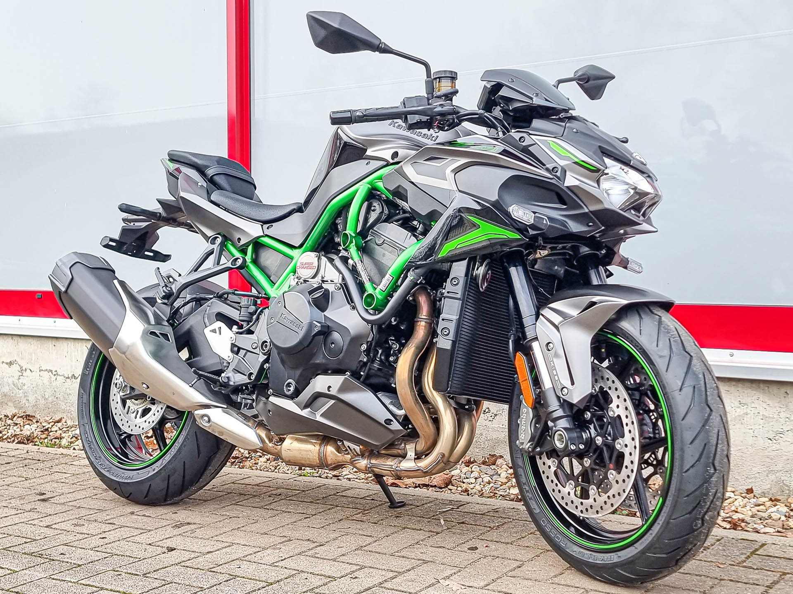
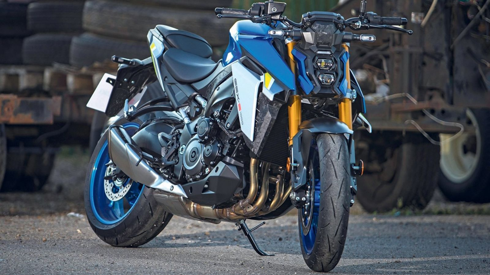
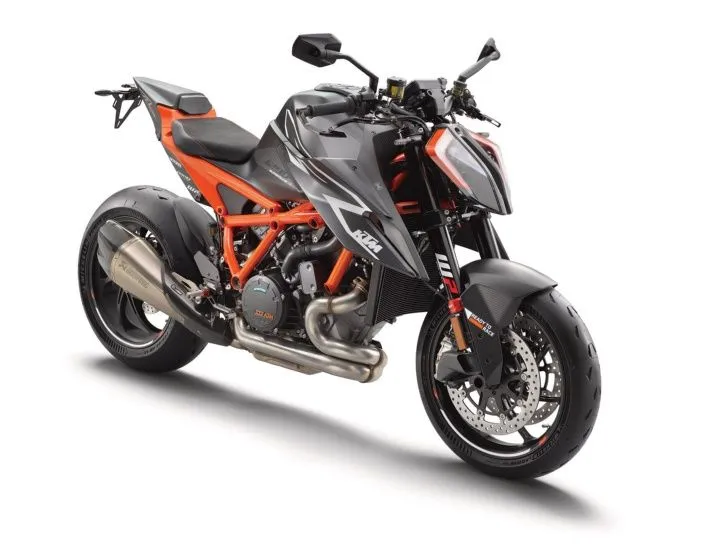
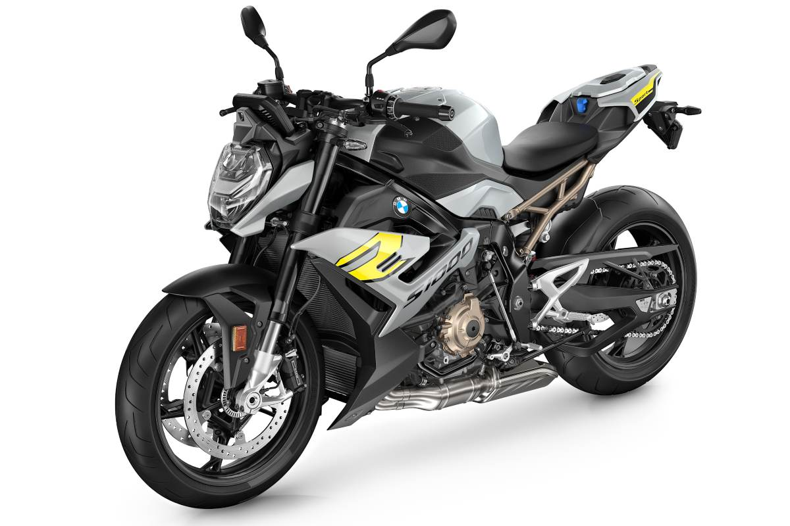
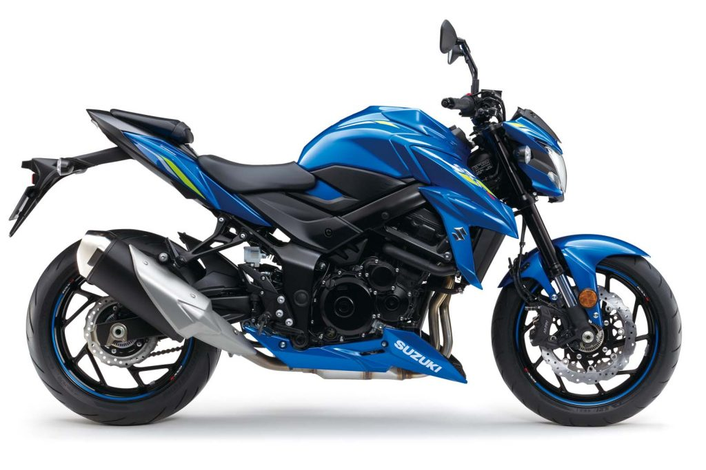
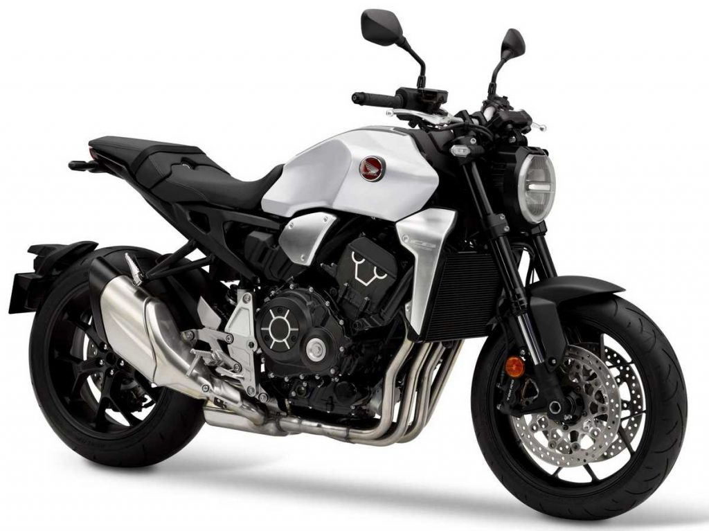

PLANET NAKED
Bienvenidos a MOTOS PLANET NAKED

Reinas de la calle
Naked ideal para MOTEROS

Las Naked Motos Infravaloradas: Son motos llamativas de calle que roban miradas, pero siempre las desmeritan por su competencia directa que son las carenadas o deportivas, pero hay modelos capaces de competir tu a tu con estas carenadas, modelos de marcas como BMW. Ducati, Yamaha, Benelli. Suzuki, Honda y distintas marcas que van actualizando modelos emblematicos o innovando con modelos nuevos, con tecnologia de punta y muchas funcionalidades que algunas deportivas no traen o no cuentan con estas funciones.
Yamaha-MT09

La preferida por excelencia de los Yamahalovers, La Yamaha MT-09 SP cuenta con un gran equipamiento a nivel de electrónica, con IMU de 6 ejes que controlan a los 4 modos de conducción, uno de ellos completamente configurable, el control de tracción, el sistema antideslizamiento, el sistema de par motor y el anti caballitos. Si a esto, le sumas un ABS en curva, pues la sensación de seguridad en marcha, se eleva de manera exponencial.
Mi Preferida Por excelencia
Honda CB 650R:

La Honda CB650R es una naked de estética neo-retro perteneciente a la famila Sport Neo Café de la marca japonesa, en la que también se incluye la CB125R, la CB300R y la CB1000R. La CBR650R emplea la base de la moto a la que sustituyó en 2019, la CB650F, mejorándola en todo para ofrecer mejores prestaciones y diferente ergonomía, apostando por un concepto más deportivo, actual y en el que la calidad también sube de nivel. En 2021 vuelve a actualizarse con una nueva horquilla Showa de funciones separadas, con la homologación Euro 5 y además se ha añadido un nuevo color gris que sustituye al anterior plata. Es una moto limitable para los usuarios del carnet A2. En 2022 y en 2023 tan sólo se realizan cambios en la decoración.
MV Agusta Brutale 1000rr
La bestia italiana, presentada en el año 2.011, la saga MV Agusta Brutale ha ido mejorando con los años como los buenos vinos y evolución tras evolución estas motos naked han ido adquiriendo esa personalidad propia distintiva del diseño italiano. De cara a este año la gama Brutale de MV Agusta recibe mejoras para seguir siendo uno de los modelos más exclusivos del segmento. La nueva MV Agusta Brutale 1000RR 2023 monta un motor de cuatro cilindros en línea que entrega una potencia de máxima 208 CV a 13.000 rpm. con un gran par motor de 116,5 Nm a 11.000 rpm. Con estos datos, este modelo ofrece una velocidad máxima que supera los 300 km/h, según anuncia la marca italiana. Para controlar toda esta potencia, MV Agusta la ha dotado de una completa electrónica derivada de la competición, con el control de tracción regulable en 8 niveles, control de par de 4 modos, 4 modos de conducción (Sport, Race, Rain and Custom) y ABS con función RLM que evita que la rueda trasera se levante en fuertes frenadas.
Menciones Honorificas
-
 BMW F900r
BMW F900r
Esta nueva F 900 R viene cargada de tecnología y trata de marcar un antes y un después en lo que a equipamiento de calidad se refiere en las naked de gama media. Iluminación completamente de LED, pantalla TFT de 6,5 pulgadas y BMW Connectivity de serie, o toda la gama de equipamiento opcional como la luz adaptativa en curva, Keyless Ride, Dynamic ESA, la llamada de emergencia inteligente, MSR, DTC, DBC, RDC o los modos de conducción Pro, el asistente de cambios Pro y el ABS Pro son los elementos más destacados. -
Kawasaki Z900
La Kawasaki Z900 es una de las naked más populares del mercado, con nuevos colores en 2023, y de nuevo disponible con la versión SE dotada de una parte ciclo imponente. Su imagen de inspiración Sugomi es uno de sus principales reclamos, con un faro full-LED que hace de ella una moto muy personal. La Kawasaki Z900 cuenta con un motor de 125 CV que brilla por las sensaciones que ofrece y por la rápida respuesta del acelerador. Es una naked con una electrónica muy desarrollada, con dos modos de motor y cuatro de conducción. Dispone igualmente de un control de tracción de tres niveles más uno desconectable con el que se sitúa como una de las motos de su segmento con mayor seguridad activa disponible. -

Kawasaki ZH2
Para algunos, es la reina del mercado actual, La Kawasaki ZH2 es la primera moto naked con motor sobrealimentado de la firma de Akashi que sienta así un inaudito precedente entre las naked de altas prestaciones. Es una moto derivada de la Ninja H2, por lo que su propulsor de cuatro cilindros es capaz de rendir 200 CV de potencia, heredando también toda la electrónica para conformar una moto tan excitante como segura en cuanto a todas las ayudas a la conducción que ofrece.En 2022 está disponible en dos decoraciones: negro con chasis rojo y otra con el chasis verde. Además de en la exclusiva versión SE. Esta ZH2 representa la cúspide de la familia Z, elevando su rendimiento dinámico hasta cotas muy radicales aunque beneficiándose de un motor que a pesar de su desbordante cifra de potencia, tiene un carácter dosificable gracias a la presencia del compresor volumétrico, responsable por otra parte de un carácter único. -

Suzuki GSX-S1000
La propuesta de Suzuki para este segmento si que ha llamado la atencion,La Suzuki GSX-S1000 ya se dejó ver hace escasos meses a través de unas fotos espía en que ya se mostraba lo que Suzuki estaba preparando para el segmento de las motos Super Naded. Como es habitual en el fabricante japonés, el motor de la Suzuki GSX-S1000 ya proviene de un modelo anterior, en este caso de la Suzuki GSX-R1000 aunque ha sufrido cambios para ofrecer más potencia en bajos y medio régimen. Con un cubicaje de 999 cc, la moto naked de Suzuki entrega una potencia de 152 CV. Este motor llega ubicado en la GSX-S1000 en un nuevo chasis de aluminio diseñado específicamente para este modelo y que comparte con la versión F. Como novedad incorpora un sistema de control de tracción con tres modos, urbano, mojado y sport. El sistema, ya utilizado en otros modelos, ofrece al piloto la posibilidad de adaptar la entrega de potencia, dependiendo de la situación, el uso y las condiciones.
Marcas fuera de esta nota
Aprilia CF Motos Victory Triumph Harley Davidson
Modelos Emblematicos




Follow Me
Subscribe
Enter your e-mail below and get notified on the latest blog posts.